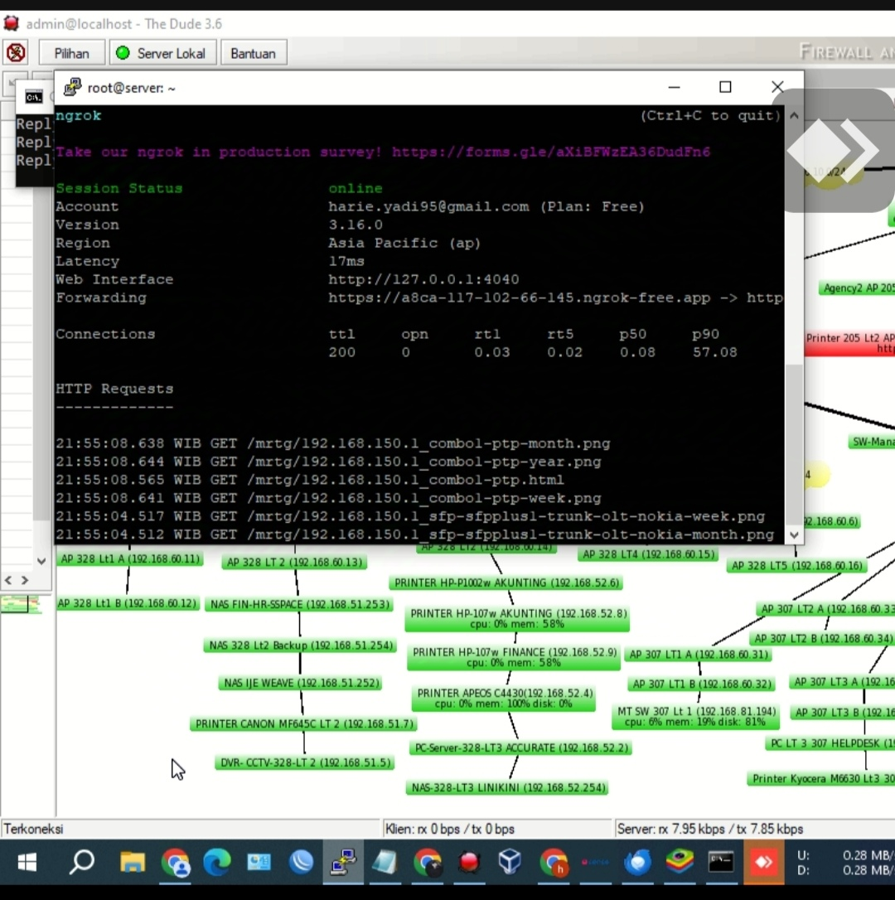

Tentang Saya
Saya menerima gelar Sarjana Komputer dari STMIK Mitra Karya pada tahun 2016. Dengan antusiasme besar terhadap Teknologi Informasi dan pengalaman dalam Networking IT, Support IT, dan Datacenter, saya selalu tertantang untuk belajar dan mengembangkan kemampuan baru.
Keahlian
Keahlian Teknis
- Network IT
- Linux
- Cisco
- Mikrotik
Soft Skills
- Troubleshooting IT
- Komunikasi
- Kerja Tim
- Manajemen Waktu
Pengalaman Kerja
Sr. IT Helpdesk & NOC
PT. Solusi Sinergi Digital, Tbk (SURGE), Jakarta - Jul 2024 – Sekarang
- Troubleshoot perangkat IT (Laptop, Macbook, Desktop, Printer)
- Monitoring dan manage network (WiFi, Router, ISP)
- Manage email, CCTV, NAS Storage, VPN
Data Center Operation
PT. Dunia Virtual Online, Tbk (AREA31), Depok - Jan 2023 – Jul 2024
PT. Dwi Tunggal Putra, Jakarta - Apr 2017 – Desember 2022
- Monitoring jaringan dan utilitas datacenter
- Troubleshooting jaringan dan server (Linux & Windows)
- Konfigurasi perangkat Cisco (Switching, VLAN, Trunk)
Proyek Saya



Pendidikan
Sarjana Komputer (S.Kom) - STMIK Mitra Karya, Bekasi - 2012 - 2016 | IPK: 3.31
Mekanik Industri - SMKN 1 Tarumajaya, Bekasi - 2009 - 2012
Sertifikasi
- CCNA Network Engineer - Digital Talent Scholarship (KOMINFO) - 2020
- Networking Technician - BBPLK Cevest (Kemenaker) - 2017
- Cloud Practitioner Essentials - Dicoding - 2022
- Dasar Cisco & Mikrotik - ID-Networkers - 2023
Testimonial
"Hari adalah seorang profesional yang sangat berdedikasi. Keahliannya dalam jaringan dan infrastruktur TI sangat mengesankan." - Klien A